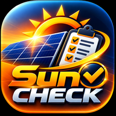

Última atualização: 08/10/2026
Esta política explica como o aplicativo SunCheck ("aplicativo"), disponibilizado por Flash Energia Solar Ltda, inscrita no CNPJ 34.942.180/0001-42 ("nós"), trata informações. O aplicativo é uma ferramenta para vistoria técnica de usinas fotovoltaicas.
Todas as informações registradas no aplicativo são armazenadas somente no aparelho do usuário, no armazenamento privado do aplicativo. O SunCheck não possui servidores, não exige cadastro ou login e não envia dados para nós nem para terceiros.
Essas informações são inseridas pelo próprio usuário e usadas apenas para produzir o registro da vistoria e o relatório em PDF.
O aplicativo não acessa localização, contatos, microfone nem outros dados do aparelho.
Relatórios PDF e arquivos de backup só saem do aparelho quando o usuário escolhe compartilhá-los (por exemplo, por e-mail ou mensagem). Nesses casos, o envio é feito pelo aplicativo escolhido pelo usuário e segue a política desse aplicativo. Os arquivos de backup contêm todos os dados registrados, inclusive dados pessoais, e devem ser enviados apenas a destinos autorizados.
Fotos e assinaturas coletadas durante a vistoria são incluídas no relatório como evidência técnica e de aceite. Recomendamos que o vistoriador informe o cliente sobre esse uso antes de coletar a assinatura.
Os dados permanecem no aparelho até que o usuário os exclua no aplicativo (clientes, usinas, vistorias em andamento, fotos) ou desinstale o aplicativo ou limpe seus dados nas configurações do Android. Vistorias concluídas são preservadas como registro técnico.
A empresa ou profissional que utiliza o SunCheck para registrar dados de seus clientes atua como controlador desses dados, nos termos da Lei Geral de Proteção de Dados (Lei nº 13.709/2018), sendo responsável por informar os titulares e atender às suas solicitações. Como os dados não são enviados a nós, não temos acesso a eles.
O aplicativo é destinado a uso profissional e não é direcionado a menores de 18 anos.
Esta política pode ser atualizada. A versão vigente estará sempre neste endereço, com a data da última atualização.
Dúvidas: flashsolarsnp@gmail.com.